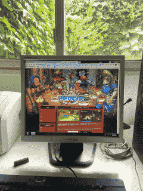

Lartunet
Hello! Welcome to the lartunet, Lartu's corner of the internet. Here you'll find information about games and software I've worked on. Me? I make videogames and other code stuff. I love food and rainy days. Thank you for passing by!
You may be interested in the videogames I've worked on, or the programming languages I've developed. Or maybe other projects.
I can also offer you my List of Cool Links and Books. Or you can just scroll and see what you find.If I have any thoughts I'd like to share, I'll post them here.
The source code for this website can be found here. It's generated using Katalyn.
The lartunet is part of the LOW TECH WEBRING!
About Me
Hello, I'm Lartu. This is my personal website.
I'm mostly a game developer. Mostly, because I work on other stuff from time to time. I co-founded Stonehollow Workshop.
Find me on X (Twitter), GitHub, and Itch.io. You may also e-mail lartu (at) lartu dot net.
If you see a lartu anywhere else, that's also probably me.
Videogames

This section talks abouts the videogames I've developed. Most of them can also be found on my Itch.io page.
- Eterspire (Journey Anew!)
iOS & Android, 2024
Award Winning MMORPG with over 100K players. A rework of most content from Eterspire (2023),
focused on streamlining the gameplay experience and making it more welcoming to
new players. It introduces a main storyline and multiple quality of life features
that make the game much better. - Eterspire (Mobile, Alpha 3)
iOS & Android, 2023
A complete, graphically superior rewrite of Eterspire, focused on questing,
befriending wacky characters, exploring, and upgrading your gear.
We felt the game was now more suited for mobile devices, so we took the leap.
Dubbed "the best mobile MMORPG in the history of the universe" by ourselves. - Eterspire: Return of Salgaraak (Beta II)
Web & Windows, 2022-2023
No longer playable, linked to archived version on the Wayback Machine.
Known initially as Eterspire - Beta II, it was a complete overhaul of Eterspire,
focused on exploring a world and completing quests. It started as a hobby project with
a friend before eventually becoming our full-time job. Offline since the release of
Eterspire (2023). - Eterspire (Beta I)
Web, 2021
No longer playable, linked to archived version on the Wayback Machine.
A minimal MMORPG about exploring an infinite tower, fighting monsters, finding
equipment, and climbing higher than everyone else. Made over the course of four months.
Eventually replaced by Eterspire: Return of Salgaraak.
Lovingly nicknamed 'Eterspire: Beta I'. - Soft Drizzle: B-Track
Windows & macOS, 2020
A short visual novel about friendship and Halloween Festivals. Sequel to Soft Drizzle.
Made in a month for the Spooktober Visual Novel Jam. Awarded Best Unity Submission. - Soft Drizzle
Web, 2020
A short, 64x64 resolution visual novel about friendship and rainy days, made in
7 days for LOWREZJAM 2020. Full of typos, as the screenplay was written during a long,
coffee fueled night writing session. I'd love to remake it someday. - Fateful Lore
Android & iOS, 2020
Critically acclaimed retro-inspired RPG for Android and iOS devices. We found
no RPGs on these platforms that looked and played the way we wanted, so we made one.
The company that published League of Legends in Korea almost published it over there,
but then the pandemic struck. - Eternal Lux
Android, 2014
No longer available on the Google Play store.
A mobile SRPG for Android Devices inspired by the Ultima games.
Designed to be as lightweight as possible. Downloaded by tens of thousands of
players worldwide. - Aidinia: An Epic Adventure!
Android, 2013
No longer available on the Google Play store.
A mobile RPG for Android Devices inspired by Gameboy Color RPGs
such as Dragon Quest I & II. Although it's not the first game I
ever released, it's the first 'serious' one. - Dozens of Flash games, some of which have won awards on Newgrounds.
Programming Languages & Esolangs

This section talks abouts the programming languages I've developed (to varying degrees of esotericism).
- LDPL
2019
Lartu's Definitive Programming Language, or LDPL the Dinosaur Programming Language. A COBOL-inspired programming language, designed to be expressive, readable,
fast and easy to learn. In other words: a masterpiece.
Considered complete and in minimal evolution mode since
LDPL 5. One of the best things I've ever made, for a number of reasons. - Katalyn
2024
The Katalyn programming language is a powerful scripting language designed to
pair the simplicity of Lua with the power of Perl. It integrates an intuitive syntax
with a comprehensive, batteries-included standard library of useful functions.
Whether you are writing console scripts, calling APIs or parsing text, Katalyn
helps you get things done without getting in the way! - Polaris
2020
A minimal, experimental stack-based, concatenative, interpreted programming
language with strings as its only data type. Written in C++98, designed to run on
Unix systems, backported to MS-DOS. - WebSCFL
2024
WebSCFL stands for Web Sectioned Command First Language.
It's a programming language designed to make simple Prof. Dr. Style websites.
This website used to be written and compiled using WebSCFL. - Polaris Twist
2024
Polaris Twist is a refreshing stack-based, concatenative,
interpreted programming language with strings as its only data type.
It's a revision of my original Polaris, much faster and with Foreign
Function Interface support. It has been designed to be small in size
and minimal in language features. Written in C++98, so it can probably
be compiled with any C++ compiler out there. - Nari (2023)
2023
Nari (2023) is a new iteration of my Nari programming language.
I develop it to relax, so I call Nari 'programming language programming as therapy'.
Nari is inspired by Forth, or how I imagine Forth to be, as I've never written a
single line of Forth. Nari is a weakly typed language. Its only data types are
strings and integers. I don't know if it's fast or not (it probably isn't).
I might expand it over time. I also might not.
Other Computer Projects
This section highlights some of my projects, though I've developed many others that aren't included,
either because they don't fit here or because I don't find them significant enough to add. Oh bother.
- p5.clickable
2019
Event driven, easy-to-use button library for P5.js. It even ended up in a P5 book. I'm in a book! - Larturead
2024
Web reimplementation of BeKnowledge, my reading tool for reading fast. - dir
2024
This is a tiny script I use to display the contents of a directory in my terminal in a fashion similar to MS-DOS's dir, which I like better than the usual ls. - GBA-Dev
2023
Some tests and a half-baked (but very performant) pixel graphical library for Gameboy Advance game development. - TunaBB
2023
A bulletin board designed from scratch to be self-contained, easy to deploy, easy to customize and easy to extend. - Mitsubachi
2019
Mitsubachi is a tiny and open chat protocol, designed to be minimal, easy to implement, easy to use and easy to understand. Mitsubachi supports nicknames, nickname changing, user-to-user messaging and channel / group (known in Mitsubachi as 'distribution lists') chat. - tmon
2020
tmon, the [You]Tube Monitor, is a tool to make regular, local backups of your YouTube music playlists. It's pronounced te-mon, with te like in tetris and mon like in monitor. - OpenNapkin
2020
OpenNapkin is a graphical Gopher client written in Gambas3. I wrote OpenNapkin because I wasn't able to find another Gopher client that wasn't written only for console or that wasn't part of a much bigger web-browsing suite. - I'm most probably forgetting something.
Curated Reads

Also known as 'Books I Really Like'.
- World of Warcraft
Daniel Lisi, 2016, Boss Fight Books
With over 100 million accounts and $10 billion in revenue, World of Warcraft is the most-subscribed MMORPG and highest-grossing game ever. Daniel Lisi, a lifelong WoW player turned game developer, explores its origins, addictive gameplay, social impact, and the deep connections forged within its world. - EverQuest
Matthew S. Smith, 2024, Boss Fight Books
«You're in our world now.» Sony's 1999 ad for EverQuest invited players into a groundbreaking MMORPG. It became the top subscription game in North America for five years until World of Warcraft took over. Journalist Matthew S. Smith explores its creation, impact on gaming addiction, and lasting legacy. - .hack//AI Buster
Tatsuya Hamazaki, 2002. My edition is by Tokyopop, published in 2006.
AI Buster, the prequel to .hack follows the avatar Albireo, as he tries to discover why The World -- the most advanced game ever created is in danger of falling apart. I haven't played the hack games as of this writing, but this book is an amazing MMORPG read regardless. Also my favourite book.
Thoughts

No thoughts yet!
List of Cool Links

What and Why
Google and Bing have become very crappy. Every day I find it harder and harder to find stuff there. Some time ago I wrote a tweet stating that 'I used to be a
Google user, now it doesn't find anything. I moved to Bing a month ago, it's now become
the same. It's all AI nonsense. It's time to go back to 'Cool Sites' links on personal
webpages. We've gone full circle.'
This is my (self) response to that.
(BTW I use Ecosia now, and it seems
to work much better than the alternatives. It's a keyword based search engine, so it
doesn't search by matching your query to website profiles; it actually tries to match
the words you requested.)
I've recently learned about Awesome Lists*. I don't think this qualifies as one.
But here's some stuff I found interesting. I'm mostly into game design and development
(particularly MMORPGs), so I expect to end up adding a lot of resources about that here.
And other things. I hope you find it interesing too!
*Awesome Lists are curated lists of resources about a specific topic. These
lists are often created and maintained by enthusiasts and experts in the respective field.
Links About MMORPG Design
- Virtual Economic Theory: How MMOs Really Work
- Google Play MMORPG Report (PDF)
- IAP Packs in Mobile F2P: Analysis and Design
- Game Ticks (Server Cycles) in RuneScape
- Game Squares (Tiles) in RuneScape
Links About Shaders & Visual Effects
- Blender NPR: Recreating the Genshin Impact Shader
Links About General Game Design
- The case for movie-length, narrative video games
Links About General Programming & Computing
- Code that Doesn't Rot
- Why are scripting languages (e.g. Perl, Python, and Ruby) not suitable as shell languages?
- How Big Should a Programming Language Be?
- After self-hosting my email for twenty-three years I have thrown in the towel. The oligopoly has won.
Links About Retrocomputing
- Rediscovering the Small Web
Links About Other Fun Stuff
- The Rise of Wackaging
- The Black Box Theory
- How to Succeed in Business While Really Trying
Links to Games
- Eterspire (Best mobile MMORPG in the history of the universe)
- AdventureQuest
- Queville (dead, but interesting for archaeological reasons)
- Nodiatis
Video Essays
- RuneScape is Awesome, And Here's Why
- Making Night in the Woods Better with Open Source
- Crafting A Tiny Open World: A Short Hike Postmortem
- Worst MMO Ever? - Nostale
- Worst MMO Ever? - Nodiatis
Webpage compiled on Mon Feb 24 00:36:47 -03 2025.